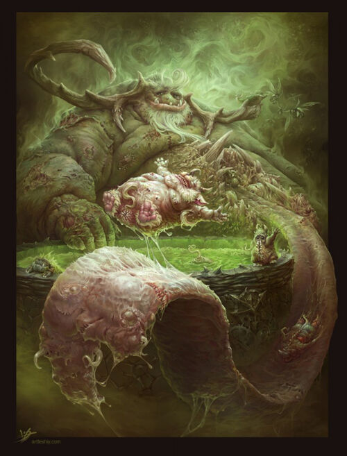

Нургл
Нургл — Повелитель Разложения и Господин Мора и Чумы, одна из четырёх главных Губительных Сил.
Он является третьим из богов Хаоса, полностью пробудившимся в варпе, появившись во 2-м тысячелетии во время Средневековья Терры, когда великие чумные бедствия охватили весь мир, предвещая его рождение.

Его главным соперником является Тзинч, Владыка Перемен, так как их силы происходят из противоположных источников.
Сила Тзинча — надежда и амбиции, в то время как Нургл черпает мощь из страха, рождённого отчаяньем и безнадежностью.